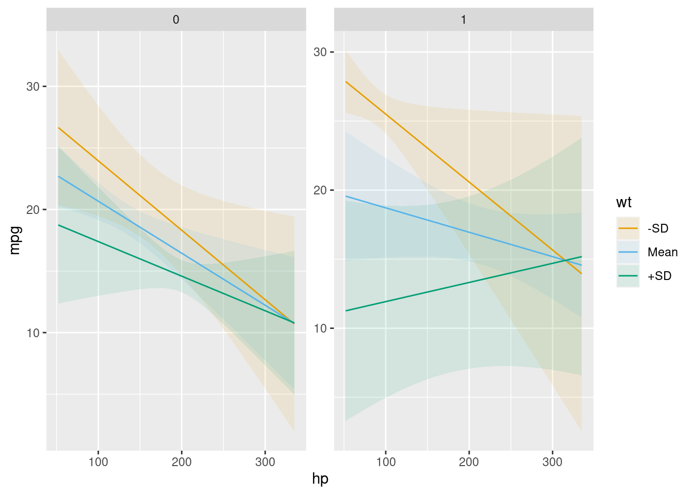

install.packages("marginaleffects")1 Get Started
1.1 Installation
Install the latest CRAN release:
Install the development version:
install.packages(
c("marginaleffects", "insight"),
repos = c("https://vincentarelbundock.r-universe.dev", "https://easystats.r-universe.dev"))Restart R completely before moving on.
1.2 Estimands: Predictions, Comparisons, and Slopes
The marginaleffects package allows R users to compute and plot three principal quantities of interest: (1) predictions, (2) comparisons, and (3) slopes. In addition, the package includes a convenience function to compute a fourth estimand, “marginal means”, which is a special case of averaged predictions. marginaleffects can also average (or “marginalize”) unit-level (or “conditional”) estimates of all those quantities, and conduct hypothesis tests on them.
The outcome predicted by a fitted model on a specified scale for a given combination of values of the predictor variables, such as their observed values, their means, or factor levels. a.k.a. Fitted values, adjusted predictions.
predictions(),avg_predictions(),plot_predictions().
Compare the predictions made by a model for different regressor values (e.g., college graduates vs. others): contrasts, differences, risk ratios, odds, etc.
comparisons(),avg_comparisons(),plot_comparisons().
Partial derivative of the regression equation with respect to a regressor of interest. a.k.a. Marginal effects, trends.
slopes(),avg_slopes(),plot_slopes().
Predictions of a model, averaged across a “reference grid” of categorical predictors.
marginalmeans().
Predictions, comparisons, and slopes are fundamentally unit-level (or “conditional”) quantities. Except in the simplest linear case, estimates will typically vary based on the values of all the regressors in a model. Each of the observations in a dataset is thus associated with its own prediction, comparison, and slope estimates. Below, we will see that it can be useful to marginalize (or “average over”) unit-level estimates to report an “average prediction”, “average comparison”, or “average slope”.
One ambiguous aspect of the definitions above is that the word “marginal” comes up in two different and opposite ways:
- In “marginal effects,” we refer to the effect of a tiny (marginal) change in the regressor on the outcome. This is a slope, or derivative.
- In “marginal means,” we refer to the process of marginalizing across rows of a prediction grid. This is an average, or integral.
On this website and in this package, we reserve the expression “marginal effect” to mean a “slope” or “partial derivative”.
The marginaleffects package includes functions to estimate, average, plot, and summarize all of the estimands described above. The objects produced by marginaleffects are “tidy”: they produce simple data frames in “long” format. They are also “standards-compliant” and work seamlessly with standard functions like summary(), head(), tidy(), and glance(), as well with external packages like modelsummary or ggplot2.
We now apply marginaleffects functions to compute each of the estimands described above. First, we fit a linear regression model with multiplicative interactions:
library(marginaleffects)
mod <- lm(mpg ~ hp * wt * am, data = mtcars)Then, we call the predictions() function. As noted above, predictions are unit-level estimates, so there is one specific prediction per observation. By default, the predictions() function makes one prediction per observation in the dataset that was used to fit the original model. Since mtcars has 32 rows, the predictions() outcome also has 32 rows:
pre <- predictions(mod)
nrow(mtcars)[1] 32nrow(pre)[1] 32pre
Estimate Std. Error z Pr(>|z|) 2.5 % 97.5 %
22.5 0.884 25.44 <0.001 20.8 24.2
20.8 1.194 17.42 <0.001 18.5 23.1
25.3 0.709 35.66 <0.001 23.9 26.7
20.3 0.704 28.75 <0.001 18.9 21.6
17.0 0.712 23.88 <0.001 15.6 18.4
--- 22 rows omitted. See ?avg_predictions and ?print.marginaleffects ---
29.6 1.874 15.80 <0.001 25.9 33.3
15.9 1.311 12.13 <0.001 13.3 18.5
19.4 1.145 16.95 <0.001 17.2 21.7
14.8 2.017 7.33 <0.001 10.8 18.7
21.5 1.072 20.02 <0.001 19.4 23.6
Columns: rowid, estimate, std.error, statistic, p.value, conf.low, conf.high, mpg, hp, wt, am Now, we use the comparisons() function to compute the difference in predicted outcome when each of the predictors is incremented by 1 unit (one predictor at a time, holding all others constant). Once again, comparisons are unit-level quantities. And since there are 3 predictors in the model and our data has 32 rows, we obtain 96 comparisons:
cmp <- comparisons(mod)
nrow(cmp)[1] 96cmp
Term Contrast Estimate Std. Error z Pr(>|z|) 2.5 % 97.5 %
hp +1 -0.0369 0.0185 -1.995 0.04607 -0.0732 -0.000643
hp +1 -0.0287 0.0156 -1.836 0.06640 -0.0593 0.001942
hp +1 -0.0466 0.0226 -2.062 0.03922 -0.0908 -0.002302
hp +1 -0.0423 0.0133 -3.182 0.00146 -0.0683 -0.016238
hp +1 -0.0390 0.0134 -2.909 0.00362 -0.0653 -0.012734
--- 86 rows omitted. See ?avg_comparisons and ?print.marginaleffects ---
am 1 - 0 4.0807 3.9351 1.037 0.29973 -3.6319 11.793387
am 1 - 0 2.1064 2.2892 0.920 0.35751 -2.3804 6.593103
am 1 - 0 0.8951 1.6442 0.544 0.58618 -2.3275 4.117620
am 1 - 0 4.0272 3.2402 1.243 0.21391 -2.3235 10.377969
am 1 - 0 -0.2369 1.5864 -0.149 0.88129 -3.3462 2.872416
Columns: rowid, term, contrast, estimate, std.error, statistic, p.value, conf.low, conf.high, predicted, predicted_hi, predicted_lo, mpg, hp, wt, am The comparisons() function allows customized queries. For example, what happens to the predicted outcome when the hp variable increases from 100 to 120?
comparisons(mod, variables = list(hp = c(120, 100)))
Term Contrast Estimate Std. Error z Pr(>|z|) 2.5 % 97.5 %
hp 120 - 100 -0.738 0.370 -1.995 0.04607 -1.463 -0.0129
hp 120 - 100 -0.574 0.313 -1.836 0.06640 -1.186 0.0388
hp 120 - 100 -0.931 0.452 -2.062 0.03922 -1.817 -0.0460
hp 120 - 100 -0.845 0.266 -3.182 0.00146 -1.366 -0.3248
hp 120 - 100 -0.780 0.268 -2.909 0.00362 -1.306 -0.2547
--- 22 rows omitted. See ?avg_comparisons and ?print.marginaleffects ---
hp 120 - 100 -1.451 0.705 -2.058 0.03958 -2.834 -0.0692
hp 120 - 100 -0.384 0.270 -1.422 0.15498 -0.912 0.1451
hp 120 - 100 -0.641 0.334 -1.918 0.05513 -1.297 0.0141
hp 120 - 100 -0.126 0.272 -0.463 0.64360 -0.659 0.4075
hp 120 - 100 -0.635 0.332 -1.911 0.05598 -1.286 0.0162
Columns: rowid, term, contrast, estimate, std.error, statistic, p.value, conf.low, conf.high, predicted, predicted_hi, predicted_lo, mpg, hp, wt, am What happens to the predicted outcome when the wt variable increases by 1 standard deviation about its mean?
comparisons(mod, variables = list(hp = "sd"))
Term Contrast Estimate Std. Error z Pr(>|z|) 2.5 % 97.5 %
hp (x + sd/2) - (x - sd/2) -2.530 1.269 -1.995 0.04607 -5.02 -0.0441
hp (x + sd/2) - (x - sd/2) -1.967 1.072 -1.836 0.06640 -4.07 0.1332
hp (x + sd/2) - (x - sd/2) -3.193 1.549 -2.062 0.03922 -6.23 -0.1578
hp (x + sd/2) - (x - sd/2) -2.898 0.911 -3.182 0.00146 -4.68 -1.1133
hp (x + sd/2) - (x - sd/2) -2.675 0.919 -2.909 0.00362 -4.48 -0.8731
--- 22 rows omitted. See ?avg_comparisons and ?print.marginaleffects ---
hp (x + sd/2) - (x - sd/2) -4.976 2.418 -2.058 0.03958 -9.71 -0.2373
hp (x + sd/2) - (x - sd/2) -1.315 0.925 -1.422 0.15498 -3.13 0.4974
hp (x + sd/2) - (x - sd/2) -2.199 1.147 -1.918 0.05513 -4.45 0.0483
hp (x + sd/2) - (x - sd/2) -0.432 0.933 -0.463 0.64360 -2.26 1.3970
hp (x + sd/2) - (x - sd/2) -2.177 1.139 -1.911 0.05598 -4.41 0.0556
Columns: rowid, term, contrast, estimate, std.error, statistic, p.value, conf.low, conf.high, predicted, predicted_hi, predicted_lo, mpg, hp, wt, am The comparisons() function also allows users to specify arbitrary functions of predictions, with the comparison argument. For example, what is the average ratio between predicted Miles per Gallon after an increase of 50 units in Horsepower?
comparisons(
mod,
variables = list(hp = 50),
comparison = "ratioavg")
Term Contrast Estimate Std. Error z Pr(>|z|) 2.5 % 97.5 %
hp mean(+50) 0.91 0.0291 31.3 <0.001 0.853 0.966
Columns: term, contrast, estimate, std.error, statistic, p.value, conf.low, conf.high, predicted, predicted_hi, predicted_lo See the Comparisons vignette for detailed explanations and more options.
The slopes() function allows us to compute the partial derivative of the outcome equation with respect to each of the predictors. Once again, we obtain a data frame with 96 rows:
[1] 96mfx
Term Contrast Estimate Std. Error z Pr(>|z|) 2.5 % 97.5 %
hp dY/dX -0.0369 0.0185 -1.995 0.04607 -0.0732 -0.000643
hp dY/dX -0.0287 0.0156 -1.836 0.06640 -0.0593 0.001942
hp dY/dX -0.0466 0.0226 -2.062 0.03922 -0.0908 -0.002302
hp dY/dX -0.0423 0.0133 -3.182 0.00146 -0.0683 -0.016238
hp dY/dX -0.0390 0.0134 -2.909 0.00362 -0.0653 -0.012734
--- 86 rows omitted. See ?avg_slopes and ?print.marginaleffects ---
am 1 - 0 4.0807 3.9351 1.037 0.29973 -3.6319 11.793387
am 1 - 0 2.1064 2.2892 0.920 0.35751 -2.3804 6.593103
am 1 - 0 0.8951 1.6442 0.544 0.58618 -2.3275 4.117620
am 1 - 0 4.0272 3.2402 1.243 0.21391 -2.3235 10.377969
am 1 - 0 -0.2369 1.5864 -0.149 0.88129 -3.3462 2.872416
Columns: rowid, term, contrast, estimate, std.error, statistic, p.value, conf.low, conf.high, predicted, predicted_hi, predicted_lo, mpg, hp, wt, am 1.3 Grid
Predictions, comparisons, and slopes are typically “conditional” quantities which depend on the values of all the predictors in the model. By default, marginaleffects functions estimate quantities of interest for the empirical distribution of the data (i.e., for each row of the original dataset). However, users can specify the exact values of the predictors they want to investigate by using the newdata argument.
newdata accepts data frames, shortcut strings, or a call to the datagrid() function. For example, to compute the predicted outcome for a hypothetical car with all predictors equal to the sample mean or median, we can do:
predictions(mod, newdata = "mean")
Estimate Std. Error z Pr(>|z|) 2.5 % 97.5 % hp wt am
18.4 0.68 27 <0.001 17 19.7 147 3.22 0.406
Columns: rowid, estimate, std.error, statistic, p.value, conf.low, conf.high, mpg, hp, wt, am predictions(mod, newdata = "median")
Estimate Std. Error z Pr(>|z|) 2.5 % 97.5 % hp wt am
18.7 0.819 22.8 <0.001 17.1 20.3 123 3.33 0.406
Columns: rowid, estimate, std.error, statistic, p.value, conf.low, conf.high, mpg, hp, wt, am The datagrid function gives us a powerful way to define a grid of predictors. All the variables not mentioned explicitly in datagrid() are fixed to their mean or mode:
predictions(
mod,
newdata = datagrid(
am = c(0, 1),
wt = range))
Estimate Std. Error z Pr(>|z|) 2.5 % 97.5 % hp am wt
23.3 2.71 8.60 <0.001 17.96 28.6 147 0 1.51
12.8 2.98 4.30 <0.001 6.96 18.6 147 0 5.42
27.1 2.85 9.52 <0.001 21.56 32.7 147 1 1.51
5.9 5.81 1.01 0.31 -5.50 17.3 147 1 5.42
Columns: rowid, estimate, std.error, statistic, p.value, conf.low, conf.high, mpg, hp, am, wt The same mechanism is available in comparisons() and slopes(). To estimate the partial derivative of mpg with respect to wt, when am is equal to 0 and 1, while other predictors are held at their means:
Term Estimate Std. Error z Pr(>|z|) 2.5 % 97.5 % hp wt am
wt -2.68 1.42 -1.89 0.0594 -5.46 0.106 147 3.22 0
wt -5.43 2.15 -2.52 0.0116 -9.65 -1.214 147 3.22 1
Columns: rowid, term, estimate, std.error, statistic, p.value, conf.low, conf.high, predicted, predicted_hi, predicted_lo, mpg, hp, wt, am We can also plot how predictions, comparisons, or slopes change across different values of the predictors using three powerful plotting functions:
-
plot_predictions: Conditional Adjusted Predictions -
plot_comparisons: Conditional Comparisons -
plot_slopes: Conditional Marginal Effects
For example, this plot shows the outcomes predicted by our model for different values of the wt and am variables:
plot_predictions(mod, condition = list("hp", "wt" = "threenum", "am"))
This plot shows how the derivative of mpg with respect to am varies as a function of wt and hp:
plot_slopes(mod, variables = "am", condition = list("hp", "wt" = "minmax"))See this vignette for more information: Plots, interactions, predictions, contrasts, and slopes
1.4 Averaging
Since predictions, comparisons, and slopes are conditional quantities, they can be a bit unwieldy. Often, it can be useful to report a one-number summary instead of one estimate per observation. Instead of presenting “conditional” estimates, some methodologists recommend reporting “marginal” estimates, that is, an average of unit-level estimates.
(This use of the word “marginal” as “averaging” should not be confused with the term “marginal effect” which, in the econometrics tradition, corresponds to a partial derivative, or the effect of a “small/marginal” change.)
To marginalize (average over) our unit-level estimates, we can use the by argument or the one of the convenience functions: avg_predictions(), avg_comparisons(), or avg_slopes(). For example, both of these commands give us the same result: the average predicted outcome in the mtcars dataset:
avg_predictions(mod)
Estimate Std. Error z Pr(>|z|) 2.5 % 97.5 %
20.1 0.39 51.5 <0.001 19.3 20.9
Columns: estimate, std.error, statistic, p.value, conf.low, conf.high This is equivalent to manual computation by:
The main marginaleffects functions all include a by argument, which allows us to marginalize within sub-groups of the data. For example,
avg_comparisons(mod, by = "am")
Term Contrast am Estimate Std. Error z Pr(>|z|) 2.5 % 97.5 %
hp mean(+1) 1 -0.0436 0.0213 -2.050 0.04039 -0.0854 -0.00191
hp mean(+1) 0 -0.0343 0.0159 -2.160 0.03079 -0.0654 -0.00317
wt mean(+1) 1 -6.0718 1.9762 -3.072 0.00212 -9.9451 -2.19846
wt mean(+1) 0 -2.4799 1.2316 -2.014 0.04406 -4.8939 -0.06595
am mean(1) - mean(0) 1 1.9029 2.3086 0.824 0.40980 -2.6219 6.42773
am mean(1) - mean(0) 0 -1.3830 2.5250 -0.548 0.58388 -6.3319 3.56589
Columns: term, contrast, am, estimate, std.error, statistic, p.value, conf.low, conf.high, predicted, predicted_hi, predicted_lo Marginal Means are a special case of predictions, which are marginalized (or averaged) across a balanced grid of categorical predictors. To illustrate, we estimate a new model with categorical predictors:
dat <- mtcars
dat$am <- as.logical(dat$am)
dat$cyl <- as.factor(dat$cyl)
mod_cat <- lm(mpg ~ am + cyl + hp, data = dat)We can compute marginal means manually using the functions already described:
avg_predictions(
mod_cat,
newdata = datagrid(cyl = unique, am = unique),
by = "am")
am Estimate Std. Error z Pr(>|z|) 2.5 % 97.5 %
TRUE 22.5 0.834 26.9 <0.001 20.8 24.1
FALSE 18.3 0.785 23.3 <0.001 16.8 19.9
Columns: am, estimate, std.error, statistic, p.value, conf.low, conf.high For convenience, the marginaleffects package also includes a marginal_means() function:
marginal_means(mod_cat, variables = "am")
Term Value Mean Std. Error z Pr(>|z|) 2.5 % 97.5 %
am TRUE 22.5 0.834 26.9 <0.001 20.8 24.1
am FALSE 18.3 0.785 23.3 <0.001 16.8 19.9
Results averaged over levels of: cyl, am
Columns: term, value, am, estimate, std.error, statistic, p.value, conf.low, conf.high The Marginal Means vignette offers more detail.
1.5 Hypothesis and equivalence tests
The hypotheses() function and the hypothesis argument can be used to conduct linear and non-linear hypothesis tests on model coefficients, or on any of the quantities computed by the functions introduced above.
Consider this model:
(Intercept) qsec drat qsec:drat
12.3371987 -1.0241183 -3.4371461 0.5973153 Can we reject the null hypothesis that the drat coefficient is 2 times the size of the qsec coefficient?
hypotheses(mod, "drat = 2 * qsec")
Term Estimate Std. Error z Pr(>|z|) 2.5 % 97.5 %
drat = 2 * qsec -1.39 10.8 -0.129 0.897 -22.5 19.7
Columns: term, estimate, std.error, statistic, p.value, conf.low, conf.high We can ask the same question but refer to parameters by position, with indices b1, b2, b3, etc.:
hypotheses(mod, "b3 = 2 * b2")
Term Estimate Std. Error z Pr(>|z|) 2.5 % 97.5 %
b3 = 2 * b2 -1.39 10.8 -0.129 0.897 -22.5 19.7
Columns: term, estimate, std.error, statistic, p.value, conf.low, conf.high The main functions in marginaleffects all have a hypothesis argument, which means that we can do complex model testing. For example, consider two slope estimates:
Term Estimate Std. Error z Pr(>|z|) 2.5 % 97.5 % drat qsec
drat 5.22 3.79 1.38 0.1682 -2.206 12.7 3.6 14.5
drat 10.24 5.16 1.98 0.0472 0.125 20.4 3.6 22.9
Columns: rowid, term, estimate, std.error, statistic, p.value, conf.low, conf.high, predicted, predicted_hi, predicted_lo, mpg, drat, qsec Are these two slopes significantly different from one another? To test this, we can use the hypothesis argument:
Term Estimate Std. Error z Pr(>|z|) 2.5 % 97.5 %
b1=b2 -5.02 8.52 -0.589 0.556 -21.7 11.7
Columns: term, estimate, std.error, statistic, p.value, conf.low, conf.high Now, imagine that for theoretical (or substantive or clinical) reasons, we only care about slopes larger than 2. We can use the hypotheses() function to conduct an equivalence test:
avg_slopes(mod) |> hypotheses(equivalence = c(-2, 2))
Term Estimate Std. Error z Pr(>|z|) 2.5 % 97.5 % p (NonInf) p (NonSup) p (Equiv)
qsec 1.12 0.433 2.60 0.00945 0.275 1.97 <0.001 0.0216 0.0216
drat 7.22 1.365 5.29 < 0.001 4.548 9.90 <0.001 0.9999 0.9999
Columns: term, estimate, std.error, statistic, p.value, conf.low, conf.high, statistic.noninf, statistic.nonsup, p.value.noninf, p.value.nonsup, p.value.equiv See the Hypothesis Tests and Custom Contrasts vignette for background, details, and for instructions on how to conduct hypothesis tests in more complex situations.
1.6 More!
There is much more you can do with marginaleffects. Return to the Table of Contents to read the vignettes, learn how to report marginal effects in nice tables with the modelsummary package, how to define your own prediction “grid”, and much more. ****